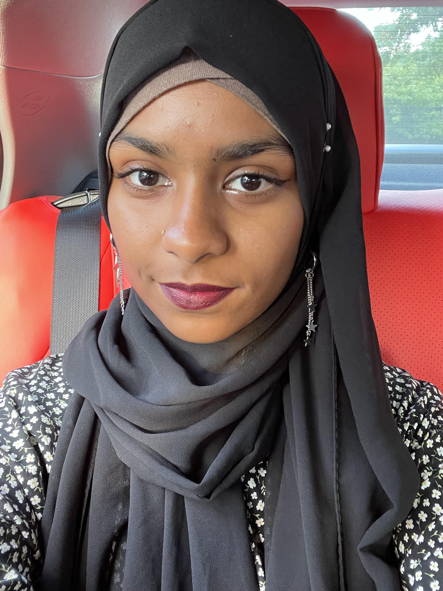
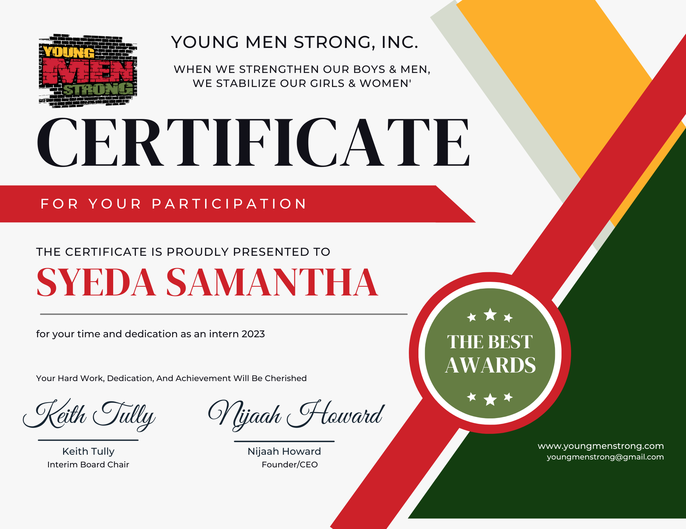

Syeda Samantha's HireMe Profile
By: Baqar Mirza

About Me:
- I am very interested in art and drawing
- I enjoy singing and learning dancing
- I am studying to become a detective in the future
- I like fashion, I love dressing up!
Schooling:
I have moved around many different schools during my younger years, here are a few of them!
- Elementary 1: ps 214
- Elementary 2: ps254
- Elementary 3: Island elementary school
- Elementary 4: ps60
- Middle School: Alihsan Academy
- High School: Thomas A. Edision CTE High School
Work Experience:
Here is a brief summary of my work experience/internships I have partook in:
Work Experience 1: I was in a SYEP program during the summer of 2023. I worked as a teacher's aid. I helped children engage in learning through fun activities and exercises. This job gave me experience in teaching and how it feels to be a authoritative figure in a classroom
Work Experience 2: I was in a month-long internship for ISP. Here, I worked as a web developer for Young Men Strong. I created web pages for the organization and published a website for the organization. This job helped me to become more confident in my coding as well as develop my abilities in coding.
To check out the Young Men Strong Organization, Click Here!
Personal Skills:
Here is some of my personal skills that can help you decide to hire me!
- I am easily adaptable to new enviroments. I can easily work in constantly moving enviroments.
- I am honest about my work. If I know my work is not 100% of my effort, I will redo/edit it untill it is my best effort
- I am determine to get things done. I will not procrastonate on work, I will get it done when the work must be complated.
Education:
My educational experiences includes:
Currently working on getting certified as a web developer after taking the web development certification exam
Criminal Justice College Now classes over the Summer of 2023
Currently taking AP Psychology to further my understanding of human behavior to help me with my future major.
Future Plans:
In the future, I plan to go into criminal justice and become a detective. I wish to go to John Jay CUNY of Criminal Justice and pursue a major in criminal justice. I have already taken steps to set me ahead for my future, like joining the criminal justice college now class during the summer. This hopefully will set me forward and establish a secure career for me in the future.
Extracurriculars:
JROTC
Archery
Art club
True Crime Club
Volleyball
Interest and Hobbies:
Some of my interests and hobbies include:
Art
Singing
Dance
Fashion
Calligraphy
Below is a Certificate I Have Received on Behalf of Young Men Strong:
